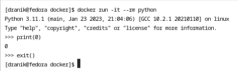

REPOSITORY TAG IMAGE ID CREATED SIZE
=====================================
latest: Pulling from library/hello-world
2db29710123e: Pulling fs layer
2db29710123e: Verifying Checksum
2db29710123e: Download complete
2db29710123e: Pull complete
Digest: sha256:aa0cc8055b82dc2509bed2e19b275c8f463506616377219d9642221ab53cf9fe
Status: Downloaded newer image for hello-world:latest
docker.io/library/hello-world:latest
=====================================
REPOSITORY TAG IMAGE ID CREATED SIZE
hello-world latest feb5d9fea6a5 16 months ago 13.3kB
docker images - вывести список достусных образов;
%%bashdocker images
REPOSITORY TAG IMAGE ID CREATED SIZE
hello-world latest feb5d9fea6a5 16 months ago 13.3kB
--a,--all - вывести все образы, по умолчанию;
%%bashdocker images --all
REPOSITORY TAG IMAGE ID CREATED SIZE
hello-world latest feb5d9fea6a5 16 months ago 13.3kB
--digests вывести дайджсты (пока неизвестно, что это такое).
%%bashdocker images --digests
REPOSITORY TAG DIGEST IMAGE ID CREATED SIZE
hello-world latest sha256:aa0cc8055b82dc2509bed2e19b275c8f463506616377219d9642221ab53cf9fe feb5d9fea6a5 16 months ago 13.3kB
--format позволяет задать формат вывода, используя GO-шаблоны.
REPOSITORY TAG IMAGE ID CREATED SIZE
hello-world latest sha256:feb5d9fea6a5e9606aa995e879d862b825965ba48de054caab5ef356dc6b3412 16 months ago 13.3kB
-q, --quiet - выводить только ID доступных образов.
%%bashdocker images -q
feb5d9fea6a5
Очень полезно знать эту команду потому как её результаты можно подвать в другие комманды используя <Некоторая комманда> $(docker ps -a)
%%bashdocker run pythondocker run pythondocker run pythondocker run pythondocker ps -adocker rm $(docker ps -aq)docker ps -a
CONTAINER ID IMAGE COMMAND CREATED STATUS PORTS NAMES
69a836679573 python "python3" 1 second ago Exited (0) Less than a second ago vigilant_wilbur
571b2f10bbe6 python "python3" 1 second ago Exited (0) Less than a second ago awesome_tharp
80b2a0870f96 python "python3" 2 seconds ago Exited (0) Less than a second ago youthful_carver
b766b4a41586 python "python3" 2 seconds ago Exited (0) 1 second ago hardcore_panini
69a836679573
571b2f10bbe6
80b2a0870f96
b766b4a41586
CONTAINER ID IMAGE COMMAND CREATED STATUS PORTS NAMES
docker rmi - удалить образ по ID или по имени
Нужно передать одно из: - <название образа>:<тэг> (<тэг> - по умолчанию latest); - IMAGE ID - id образа.
REPOSITORY TAG IMAGE ID CREATED SIZE
hello-world latest feb5d9fea6a5 16 months ago 13.3kB
===========================
Untagged: hello-world:latest
Untagged: hello-world@sha256:aa0cc8055b82dc2509bed2e19b275c8f463506616377219d9642221ab53cf9fe
Deleted: sha256:feb5d9fea6a5e9606aa995e879d862b825965ba48de054caab5ef356dc6b3412
Deleted: sha256:e07ee1baac5fae6a26f30cabfe54a36d3402f96afda318fe0a96cec4ca393359
===========================
REPOSITORY TAG IMAGE ID CREATED SIZE
docker ps - вывести контейнеры;
%%bashdocker ps
CONTAINER ID IMAGE COMMAND CREATED STATUS PORTS NAMES
-a вывести все контейнеры (по умолчанию неактивные контейневы скрыты);
%%bashdocker run nodedocker psecho "======================"docker ps -a
CONTAINER ID IMAGE COMMAND CREATED STATUS PORTS NAMES
======================
CONTAINER ID IMAGE COMMAND CREATED STATUS PORTS NAMES
8dee76b86ecf node "docker-entrypoint.s…" 1 second ago Exited (0) Less than a second ago compassionate_visvesvaraya
docker history - вывести слои некого образа
docker run - запустить некоторый контейнер
%%bashdocker ps -aecho "====================================="docker run nodedocker ps -a
CONTAINER ID IMAGE COMMAND CREATED STATUS PORTS NAMES
=====================================
CONTAINER ID IMAGE COMMAND CREATED STATUS PORTS NAMES
ac8ed03c3af5 node "docker-entrypoint.s…" 1 second ago Exited (0) Less than a second ago kind_goldwasser
-rm - проиводится автоматическое удаление контейнера, когда он выполниться. Далее приведен пример в котором загружается образ hello-world который после запуска выполнения будет удален даже из списка неакивных контейнеров.
%%bashdocker pull hello-worlddocker run --rm hello-worlddocker ps -a
Using default tag: latest
latest: Pulling from library/hello-world
2db29710123e: Pulling fs layer
2db29710123e: Download complete
2db29710123e: Pull complete
Digest: sha256:aa0cc8055b82dc2509bed2e19b275c8f463506616377219d9642221ab53cf9fe
Status: Downloaded newer image for hello-world:latest
docker.io/library/hello-world:latest
Hello from Docker!
This message shows that your installation appears to be working correctly.
To generate this message, Docker took the following steps:
1. The Docker client contacted the Docker daemon.
2. The Docker daemon pulled the "hello-world" image from the Docker Hub.
(amd64)
3. The Docker daemon created a new container from that image which runs the
executable that produces the output you are currently reading.
4. The Docker daemon streamed that output to the Docker client, which sent it
to your terminal.
To try something more ambitious, you can run an Ubuntu container with:
$ docker run -it ubuntu bash
Share images, automate workflows, and more with a free Docker ID:
https://hub.docker.com/
For more examples and ideas, visit:
https://docs.docker.com/get-started/
CONTAINER ID IMAGE COMMAND CREATED STATUS PORTS NAMES
-d позволяет запусить контейнер в фоновом режиме, то есть упавление терминалом не будет перехвачено запущенной программой. Так например образ nginx при запуске без опции -d перехватил бы управление. Но в примере далее все получается нормально;
%%bashdocker run --rm -d nginxdocker ps
ddba1811316c5e2decd75519be97e0d8ab063bde5fde5b3779eba34265d8d946
CONTAINER ID IMAGE COMMAND CREATED STATUS PORTS NAMES
ddba1811316c nginx "/docker-entrypoint.…" Less than a second ago Up Less than a second 80/tcp hardcore_mendeleev
-i выйти в интерактивный режим;
К сожалению в jupyter не запускается, потому вставлю скрин: 
-t подключить терминал или вызвать TTY
К сожалению в jupyter не запускается, потому вставлю скрин:
--name задать имя для контейнера
%%bashdocker run --rm --name unbuntu_container -d ubuntudocker psdocker stop unbuntu_container
7116dcdaa0a131a8507f9cbe149719498456fe356a23f1ddfc48f65080cfe660
CONTAINER ID IMAGE COMMAND CREATED STATUS PORTS NAMES
7116dcdaa0a1 ubuntu "/bin/bash" 1 second ago Up Less than a second unbuntu_container
unbuntu_container
90082dd7c88a0885fb05425c0f648b49be446b5f8c9f99ab2b90ec26e347373f
90082dd7c88a
CONTAINER ID IMAGE COMMAND CREATED STATUS PORTS NAMES
CONTAINER ID IMAGE COMMAND CREATED STATUS PORTS NAMES
90082dd7c88a nginx "/docker-entrypoint.…" Less than a second ago Exited (0) Less than a second ago jolly_lamarr
90082dd7c88a
CONTAINER ID IMAGE COMMAND CREATED STATUS PORTS NAMES
90082dd7c88a nginx "/docker-entrypoint.…" Less than a second ago Up Less than a second 80/tcp jolly_lamarr
docker stop позволяет отановить некоторый активный контейнер
%%bashdocker run -d nginxdocker stop $(docker ps -q)docker psdocker ps -a
f3841b6c7c465da981aa9bf6548a11f7a996a20633bd22cf8da10efbcdcd643a
f3841b6c7c46
CONTAINER ID IMAGE COMMAND CREATED STATUS PORTS NAMES
CONTAINER ID IMAGE COMMAND CREATED STATUS PORTS NAMES
f3841b6c7c46 nginx "/docker-entrypoint.…" Less than a second ago Exited (0) Less than a second ago elegant_franklin
docker exec позволит выполнить команду в запущенном контейнере
Вот пример использования с подключением TTY и интерактивыным режимом (на большее пока расчитывать не приходится). Там я поднимаю контейнер с nginx и вызываю в нем bash, выполняю пару комманд и выхожу.